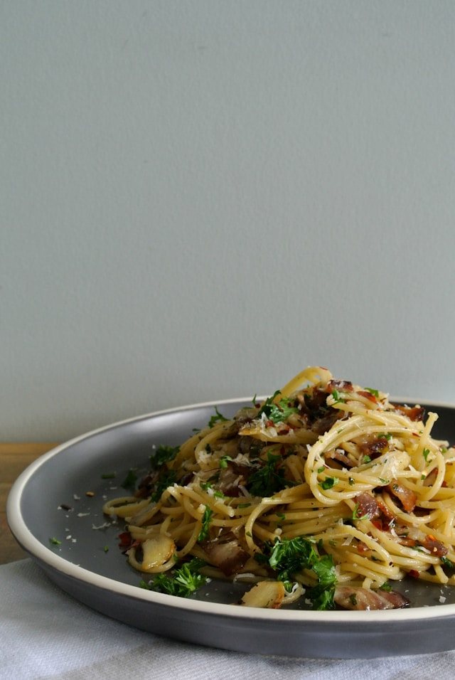

Aglio e Olio
Aglio e Olio

Description
Spaghetti aglio e olio is a classic Neapolitan pasta dish known for its
simplicity and rich flavor, made with garlic, olive oil, and pasta. It
is celebrated for using inexpensive, pantry-staple ingredients and is
often referred to as "midnight pasta", due to its ease of preparation.
Ingredients
- Spaghetti: 450g
- Extra virgin olive oil: 120 ml
- Garlic: 6 cloves, thinly sliced (or 12 cloves for stronger flavor)
- Red pepper flakes: 0.25 teaspoon (or to taste)
- Fresh Italian parsley: 0.25 cup, finely chopped.
- Kosher salt and freshly ground black pepper: to taste
- Parmigiano Reggiano cheese: 0.5 cup, freshly grated (optional)
Steps
- Bring a large pot of slated water to a boil. Add the spaghetti and
cook until al dente, typically 8 to 12 minutes, following package
instructions.
- Whil the pasta cooks, prepare the sauce. In a large skillet, combine
the olive oil and sliced garlic. Place the skillet over medium-low
heat and cook, stirring frequently, until the garlic is golden brown
and fragrant. Do not let it burn, as it will turn bitter.
-
Add the red pepper flakes, a pinch of salt, and black pepper to the
garlic-infused oil. Stir to combine.
- Drain the cooked pasta, reserving 1 cup of the starchy pasta water.
Immediately transfer the hot pasta to the skillet with the garlic oil.
- Toss the pasta vigorously with the oil, adding a splash of the reserved
pasta water to create a silky emulsion that coats the strands. Continue
adding pasta water as needed until the sauce is well combined and glossy.
- Remove the skillet from the heat. Stir the chopped parsley and grated
Parmigiano Reggiano cheese (if usiing).
- Taste and adjust seasoning with more salt or pepper if needed. Serve
immediately, garnished with additional cheese, red pepper fglakes, and
lemon wedges if desired.
Pro tips
- Storage: store leftovers in an airtight container in the fridge for up
to 3 days. Reheat gently with a splash of water or broth to restore
moisture.
- The key to a succesful aglio e olio is creating an emulsion with the
starchy pasta water, which helps the oil adhere to the pasta.
- Use high-quality extra virgin olive oil for the best flavor.
- For a more intense garlic taste, some recipes recommend leaving
the toasted garlic pieces in the oil.
Home